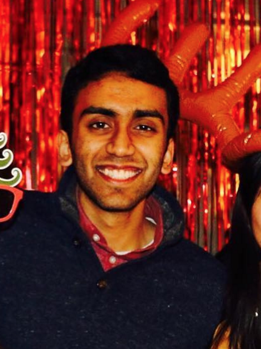

Meet the Core
Co-Chair
Muskan Shafat
Studying Bioengineering
My favorite moment on Core this year was during Maggi Movie Night when everyone was heckling the very problematic movie. The comments were much more creative than the movie!
Co-Chair
Sruthi Raguveer
Studying Bioengineering
My favorite moment on Core this year was during Maggi Movie Night when everyone was heckling the very problematic movie. The comments were much more creative than the movie!
Co-ChairRaj Raina
Studying Mathematics
Watching funny videos/memes during core meetings!

Co-ChairNeel Guha
Studying Computer Science
Forcing the entire South Asian community to listen to my awful puns while emceeing Mela as a freshman (I'm so, so sorry).
Core Member Hemangini Raina
Studying MS&E, minor in South Asian Studies
I loved our fall retreat! Listening to Bollywood music while eating Indian food on a beach in Half Moon Bay, and getting to know core members was wonderful.
Core MemberLeela Srinivasan
Studying Cultural Psychology, minor in Poetry
When we sat on a cliff by the beach for retreat, drank Capri Suns, and compared each other to vegetables. What a time to be alive
Core MemberNathan Dalal
Studying Computer Science (minor Education)
I really enjoy the festivities at Rhythms, Mela, and the Bollywood Party we throw every now and again on the row!
Core MemberSonia Gupta
Studying Economics
Sanskriti Core is a community I feel at home in. I am thankful for everyone on Core and for all the memories we have shared. My favorite memory is of all of us dancing to Bollywood music and eating samosas at Mars during Samosas and Mimosas!
Frosh InternMegha Parwani
Studying Undecided
Sanskriti Core is where I've met and gotten to know some of my closest friends at Stanford! I really value our community and its shared love of South Asian culture. My best memory was a kickback at ZAP where talking to fellow frosh interns was a bright spot during a tough day.
Core Member
Bae
Studying Product Design, hopefully
Maggi Movie Night was a heckuva lot of fun--it was just a great night of heckling the screen and enjoying each other's company. Can't wait for the next one!
Frosh InternSushil Upadhyayula
Studying Computer Science
Without a doubt the Bollywood Party at MARS. Everyone told me how much fun they had afterwards, and it was great to see CORE put something together that was so enjoyable for all of campus!
Frosh InternNeha Srivathsa
Studying Bioengineering
My favourite moment on Sanskriti Core was my first moment on Core, when all of us frosh interns were rolled out! The experience of being woken up at 6 am—to loud banging on my door and Bollywood music—by the rest of Core and then getting to know this wonderful community over breakfast on Wilbur field had such a special energy to it that I’ll never forget!
Frosh InternMeghana Reddy
Studying Human Biology and Economics
I enjoyed rolling out to Bollywood music and meeting everyone on core.
Frosh InternMallika Jhamb
Studying Management, Science and Engineering
The funniest moment on core was definitely when I was being rolled out as I was already awake, sitting in the hallway finishing a PSET. I remember being told to go back to my room so I could be rolled out 😊 I think some of the most fun memories from being on core are definitely the conversations we have while organizing events or during kickbacks & ofcourse Bollywood Party!